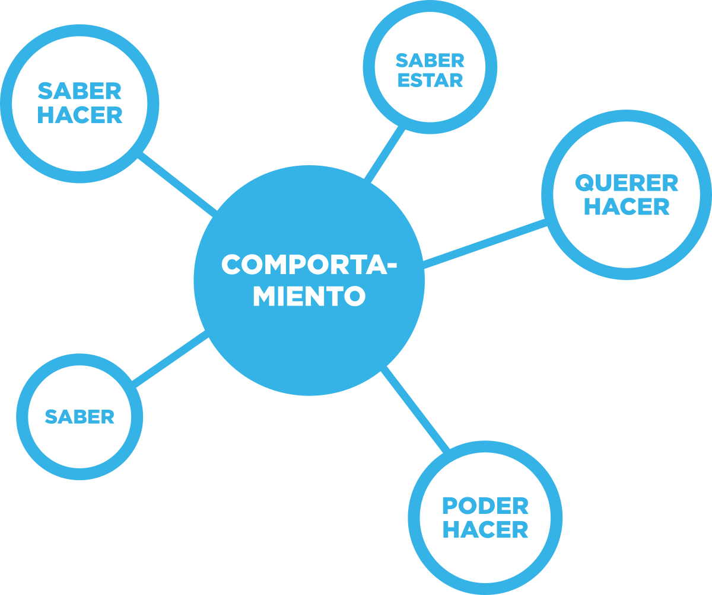

Relacionado con el área del saber
COMPONENTES Y TIPOS DE COMPETENCIAS
LOS COMPONENTES DE UNA COMPETENCIA
Ya hemos comentado que una competencia se expresa por medio de comportamientos.
Éstos están determinados por la interrelación de varios elementos:

El saber: los conocimientos de una persona (“la teoría”).
El saber hacer: las habilidades (“la práctica”).
El saber estar: las actitudes (“la manera de afrontar una situación”).
El querer hacer: la motivación (“el estímulo o impulso”).
El poder hacer: la capacidad personal en función de los recursos del entorno (“la viabilidad”).
